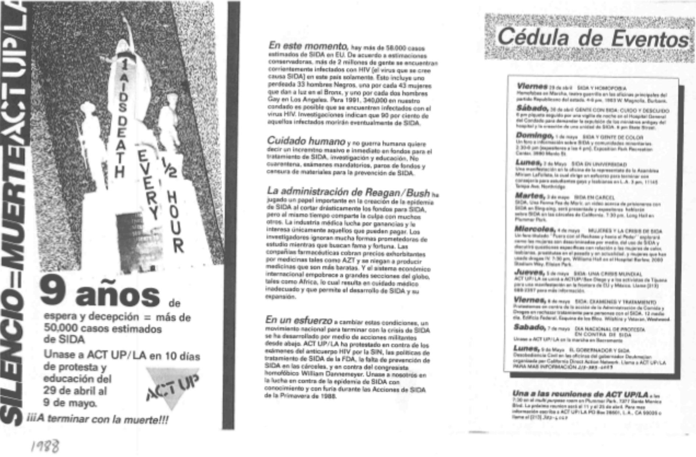
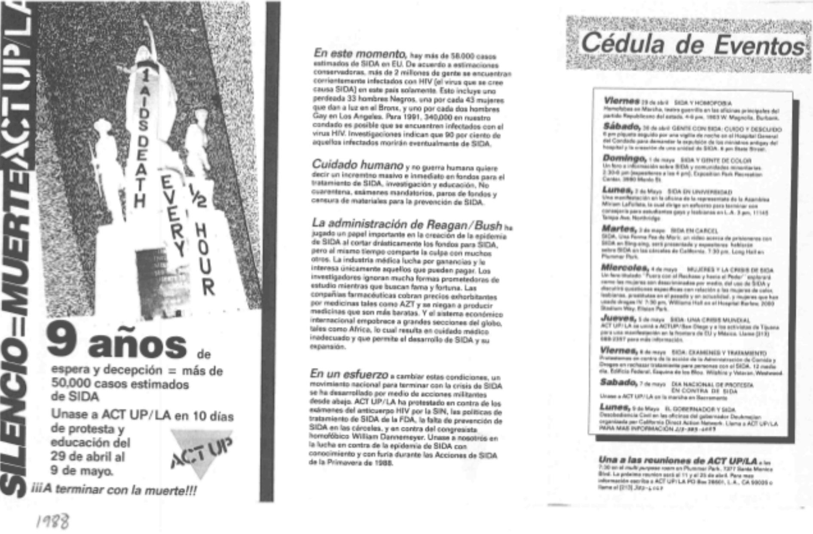
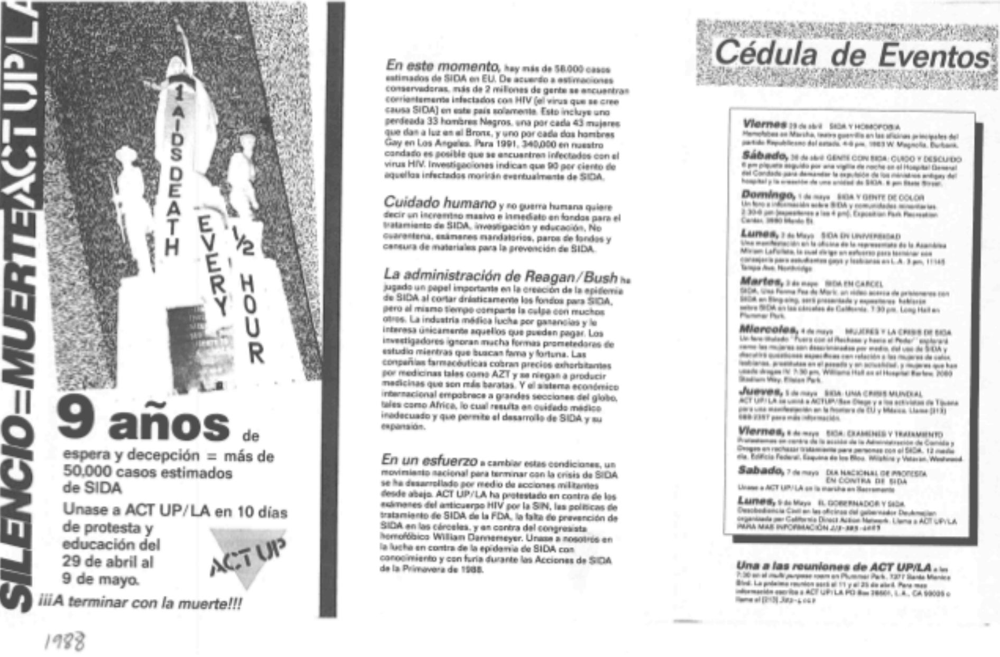

Education Efforts
Pamphlets that were handed out April 29-May 9, 1988 as a part of education efforts by ACT UP.
![Pamphlets read '9 years of delay and deception = Over 58,000 reported AIDS cases. Join ACT UP/LA in 10 days of protest and education April 29 through May 9. Stop the dying!!! Right now, there are over 58,000 reported AIDS cases in the U.S. According to conservative estimates, over 2 million people are currently infected with HIV (the virus thought to cause AIDS) in this country alone. This includes one out of every 33 Black men, one out of every 43 women giving birth in the Bronx, and one out of every two Gay men in Los Angeles. By 1991, 340,000 people in our county may be infected with HIV. Research indicates that 90% of those infected will eventually die of AIDS. What we need now are massive and immediate increases in monies spent on AIDS treatment, research, and education, NOT quarantine, mandatory testing, funding vetos and censorship of AIDS prevention materials. The Regan/Bush Administration has played a leading role in creating the AIDS epidemic by annually slashing requests for AIDS funds, but it shares the blame with many others. The medical industry strives for profit and will care only for those who can pay. Researchers ignore many promising avenues of study while seeking fame and fortune. Drug companies charge exorbitant prices for drugs like AXT and refuse to produce less costly ones. And the international economic system impoverishes great sections of the globe, like Africa, resulting in inadequate health care which allows AIDS to develop and spread unhindered. In an effort to change these conditions, a national movement to end the AIDS crisis through militant grassroots actions has developed. ACT UP/LA has protested HIV antibody testing by the INS, FDA, AIDS treatment policies, lack of AIDS prevention in the jails, and homophobic Congressperson William Dannemeyer. Join us in fighting the AIDS epidemic with knowledge and outrage during the Spring AIDS Actions '88.'](../images/HIV:AIDSActivismImages/pamphlet1.png) 

Citation: "10 days of protest and education." ACT UP/LA, April 29-May 9, 1988. (English and Español)
Pamphlets that were handed out April 29-May 9, 1988 as a part of education efforts by ACT UP.

Citation: "10 days of protest and education." ACT UP/LA, April 29-May 9, 1988. (English and Español)